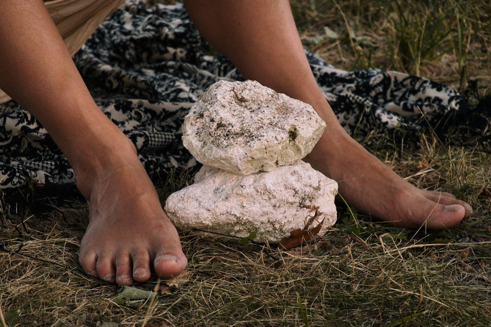

An hour online, once a month. No preparation, no commitment.

A small group that meets between the calls, online or near you.

Start a reading circle, a supper or a garden where you live. We’ll help.
“I came for an hour on a Thursday. I stayed for the people who weren’t afraid of the dark questions.”
A member in Lyon
“It’s the first place where thinking carefully and laughing loudly happen at the same table.”
A member in London
“We planted a garden. Then the garden planted us.”
A host in Bergerac
Online, 19:30 UK. Bring a question you’re living with.